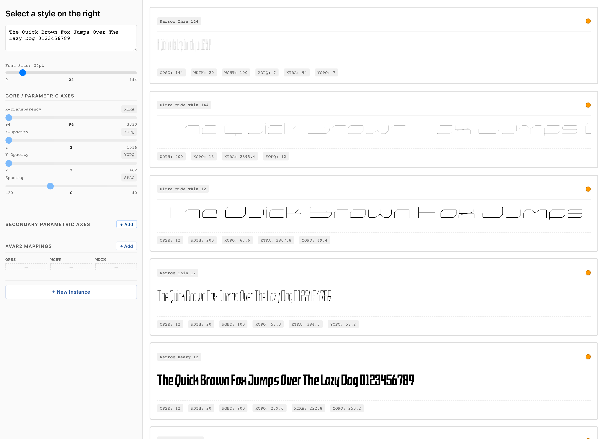
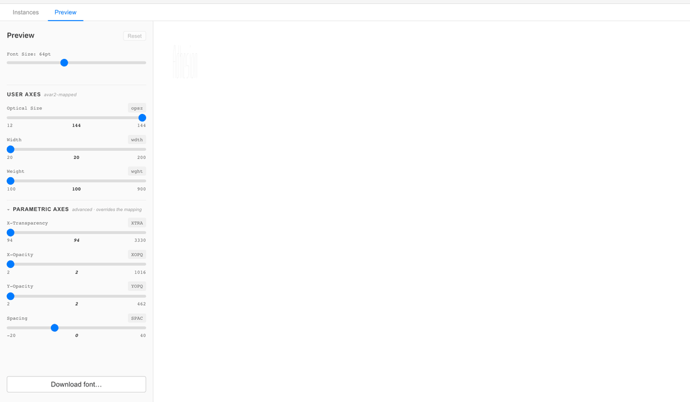
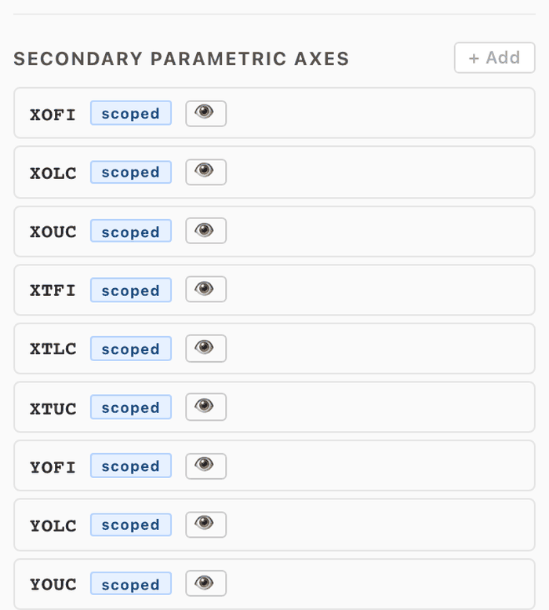
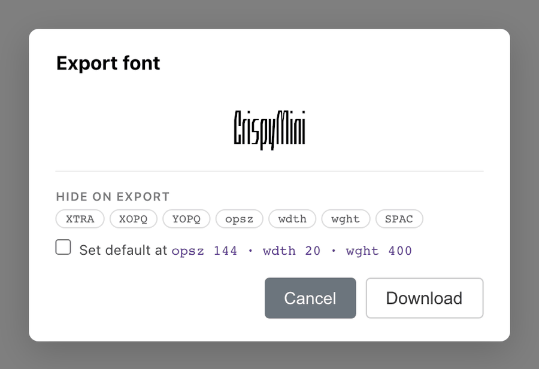
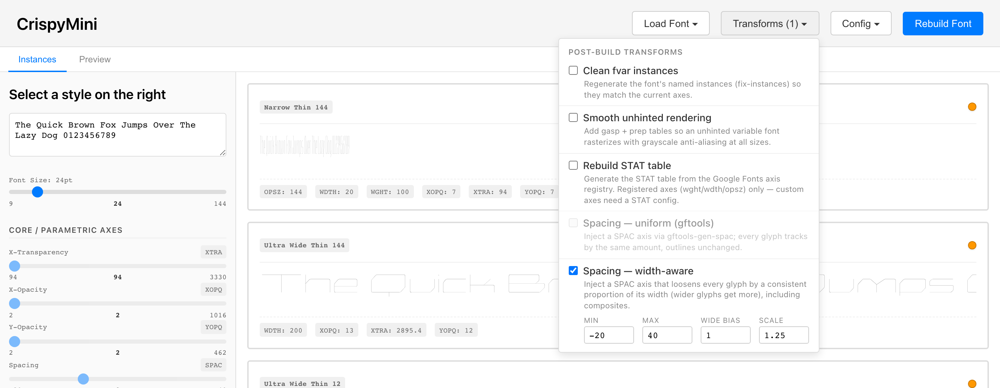

Visual authoring and preview for avar2 variable fonts.
Point it at a .glyphs or .designspace file and author
the mapping from familiar axes — weight, width, optical size — onto the
parametric axes that actually shape the strokes. What you preview is the
real compiled font, never an approximation.
Parametric axes — what the user axes drive through the mapping
CrispyMini, the studio's bundled example — three parametric axes
(stroke thicknesses + counter width) exposed to users as
opsz/wdth/wght through an avar2 mapping.
Author instances visually
The Instances tab is the authoring surface: create named styles and tune each one's parametric coordinates with sliders — every instance renders live as a row of the built font. Give an instance user-axis coordinates and it becomes an avar2 mapping; a few dozen instances span a whole designspace.

Preview the actual built font
The Preview tab drives the compiled font the way an end user's app would. Moving a user axis moves the parametric sliders through your mapping — because the browser is applying the real avar2 table, not a simulation.

Glyph-scoped secondary axes
Declare axes that deform only chosen glyphs — a crossbar axis for letters with crossbars, case-split stroke axes, figure-only tuning. Pin brace layers at any designspace location and draw their outlines in an embedded Fontra editor, with multi-source editing across all of an axis's layers at once.
Works on .glyphs and .designspace sources;
your original file is never modified.

Export with intent
Download the built font as-is, or open the export dialog to flag axes as hidden and set a custom default: pick an axis combination and the export interpolates a real master there and makes it the font's resting state — ranges intact, source untouched.

Post-build transforms
Optional VF→VF steps that run after every build: spacing axes (uniform or width-aware), instance cleanup, STAT regeneration, unhinted-rendering smoothing — or your own Python transform dropped in a folder.

Get started
# pre-release — install from the latest GitHub release pipx install https://github.com/agyeiagyeiagyei/avar2-studio/releases/latest/download/avar2_studio-0.1.0.dev6-py3-none-any.whl avar2-studio /path/to/MyFont.glyphs # or .designspace, or no argument for the font picker
All dependencies — including the fontc compiler — come with the wheel. Newest features live on the repo; see the README for installing from source.